History of Artificial Intelligence
AI's popularity has grown in waves since 1956, with two "winters" where progress and funding slowed down before picking back up.
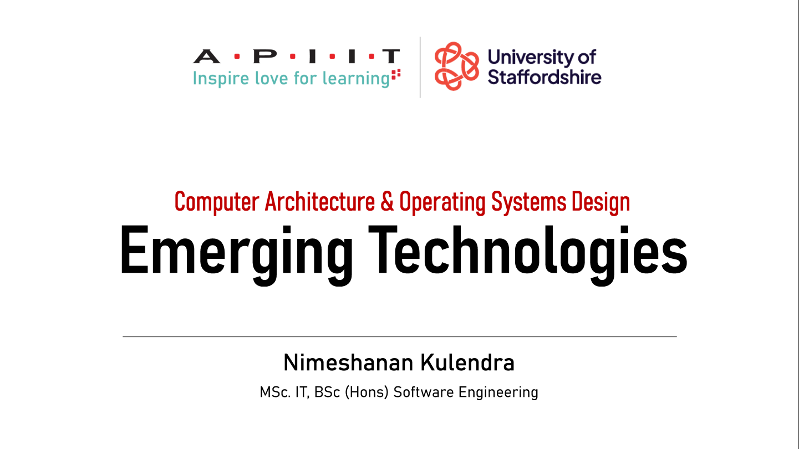
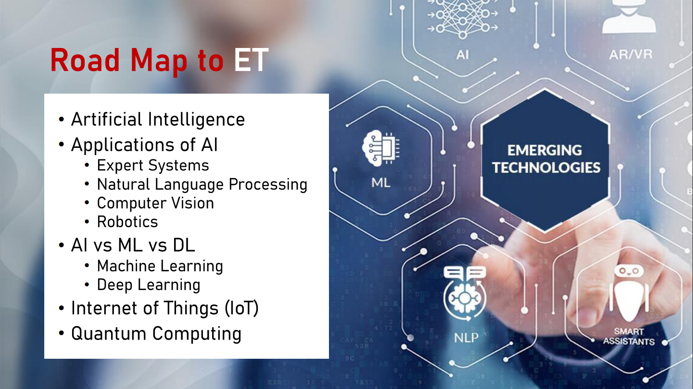
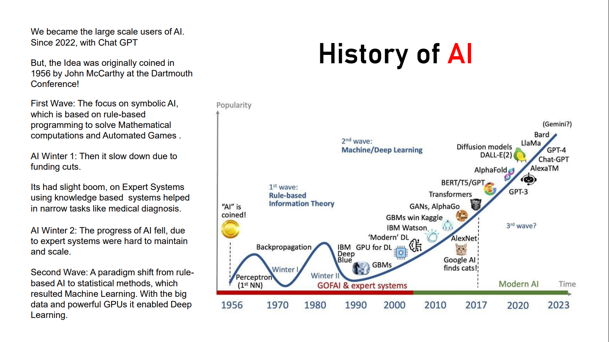
Understanding AI, its applications & Expert Systems
Artificial Intelligence is the capability of machines to imitate intelligent human behavior. It involves learning, reasoning, problem-solving, and self-correction.
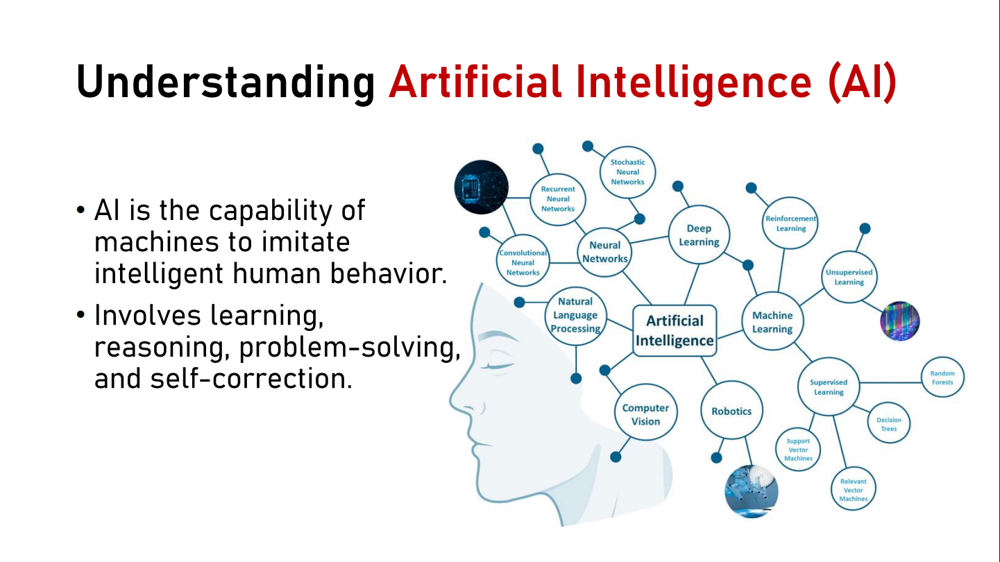
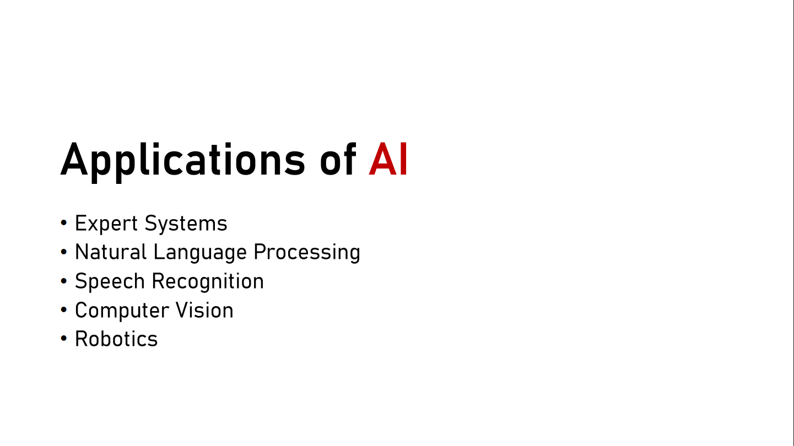
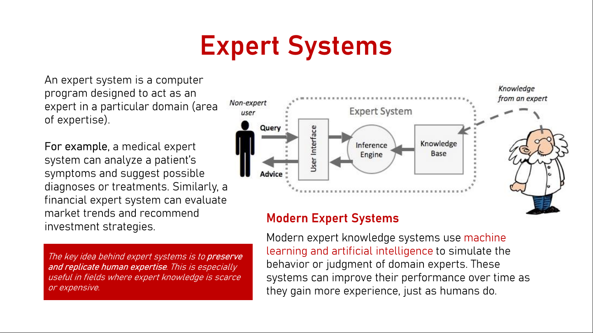
An expert system is a computer program designed to act as an expert in a particular domain. A non-expert user sends a query through a user interface; an inference engine reasons over a knowledge base (built from a real expert's knowledge) and returns advice.
| Domain | Purpose | Example |
|---|---|---|
| Medical | Analyze symptoms, suggest diagnoses | MYCIN, Watson for Oncology |
| Financial | Evaluate market trends, recommend investments | Trading algorithms, robo-advisors |
| Legal | Analyze cases, suggest strategies | Legal research assistants |
| Engineering | Troubleshoot problems, design solutions | Fault diagnosis systems |
Modern expert systems now use machine learning and AI to simulate expert judgment, improving their performance over time as they gain experience — just like humans.
Natural Language Processing & Computer Vision
Two of AI's biggest application areas: letting machines understand language, and letting machines "see".
NLP's goal is to let people and computers communicate in a natural (human) language, like English, rather than a computer language. It splits into two categories:
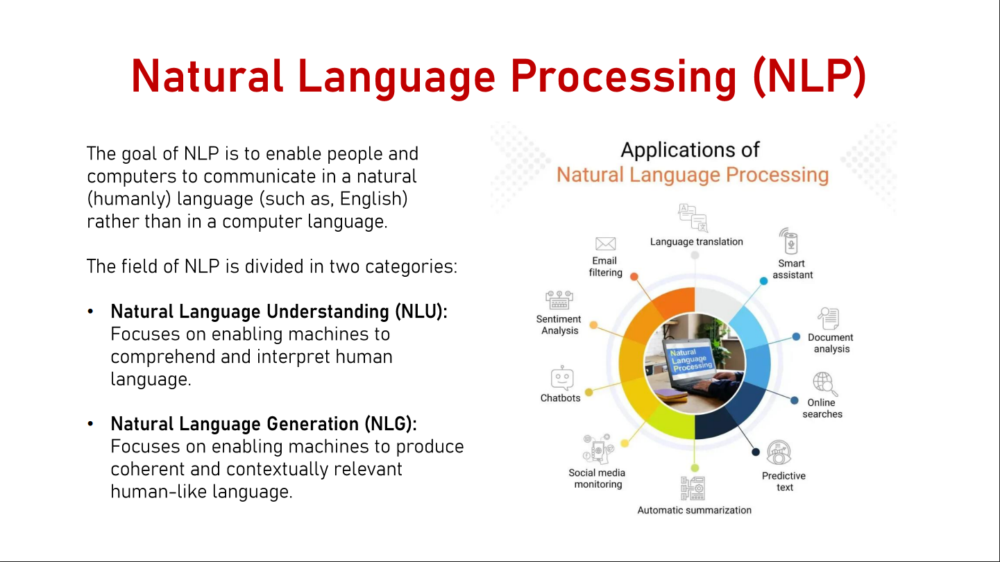
Focuses on enabling machines to comprehend and interpret human language — sentiment analysis, chatbots, document analysis, online search, email filtering.
Focuses on enabling machines to produce coherent, contextually relevant human-like language — automatic summarization, predictive text, smart assistants, translation.
CV enables computers to interpret and extract information from images and videos, similar to human perception. Compare the pipelines:
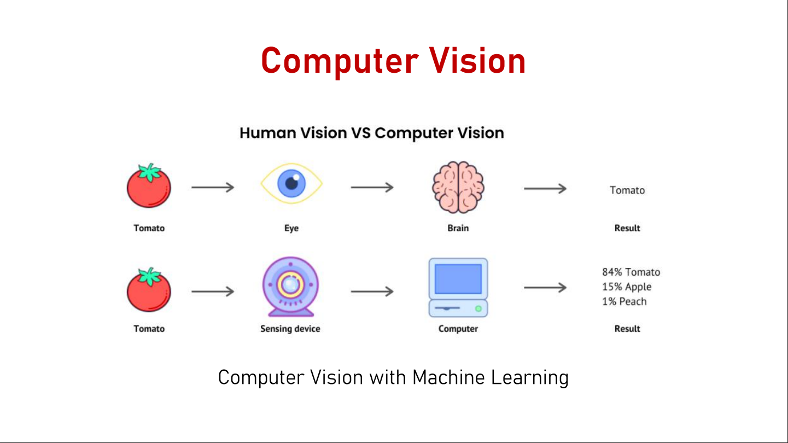
Traditional image processing pipeline: Camera → Image Acquisition → Pre-processing → Segmentation → Representation → Classification (e.g. shading correction, thresholding/edge detection, feature extraction, Bayes classifier).
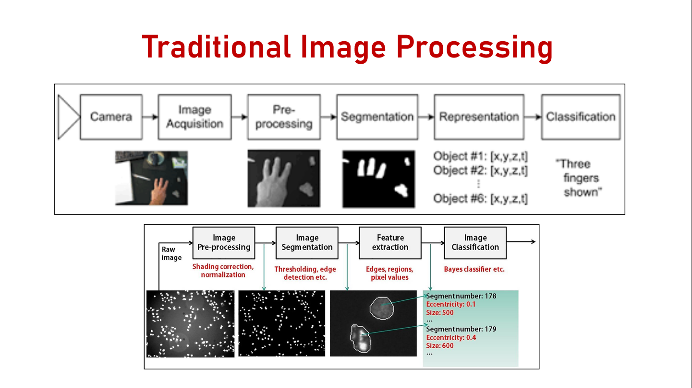
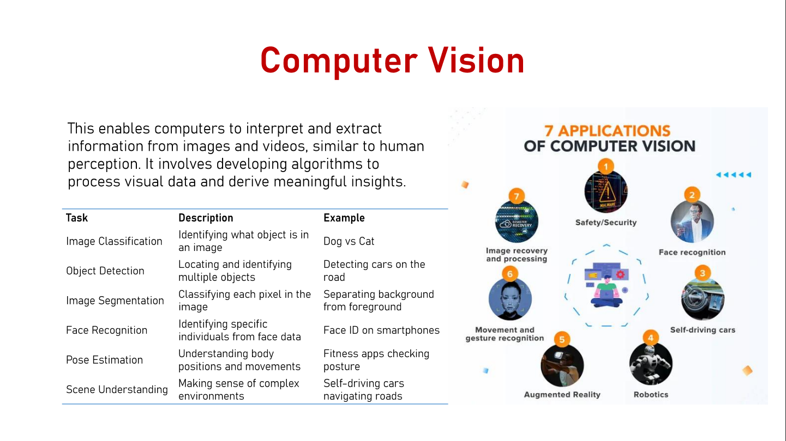
| Task | Description | Example |
|---|---|---|
| Image Classification | Identifying what object is in an image | Dog vs Cat |
| Object Detection | Locating and identifying multiple objects | Detecting cars on the road |
| Image Segmentation | Classifying each pixel in the image | Separating background from foreground |
| Face Recognition | Identifying specific individuals from face data | Face ID on smartphones |
| Pose Estimation | Understanding body positions and movements | Fitness apps checking posture |
| Scene Understanding | Making sense of complex environments | Self-driving cars navigating roads |
7 applications of computer vision: Safety/Security, Face recognition, Self-driving cars, Robotics, Augmented Reality, Movement/gesture recognition, Image recovery & processing.
Robotics
A robot is a machine that senses its environment, processes data, and performs physical actions.
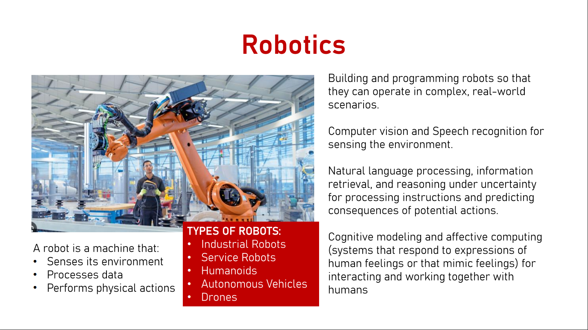
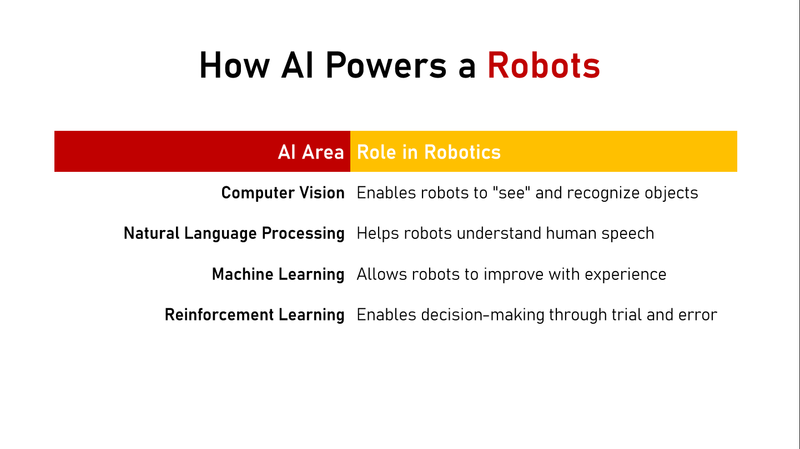
| AI Area | Role in Robotics |
|---|---|
| Computer Vision | Enables robots to "see" and recognize objects |
| Natural Language Processing | Helps robots understand human speech |
| Machine Learning | Allows robots to improve with experience |
| Reinforcement Learning | Enables decision-making through trial and error |
Robots also rely on information retrieval and reasoning under uncertainty to process instructions and predict consequences, plus cognitive modeling and affective computing to work alongside humans.
AI vs ML vs DL
Three nested concepts, from broadest to most specific: AI ⊃ ML ⊃ DL.
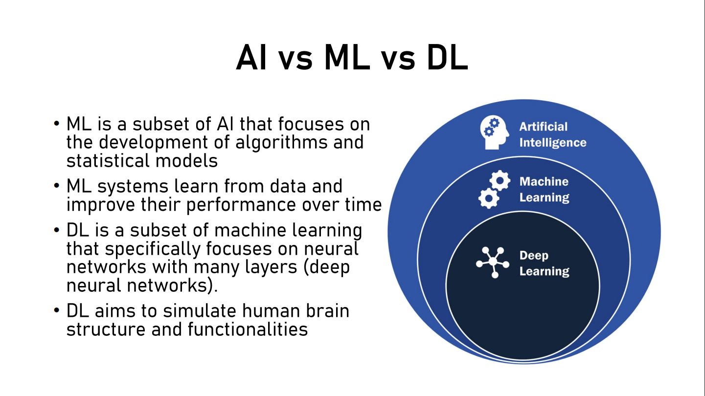
| Concept | Scope | Key Feature |
|---|---|---|
| AI | Broad | Simulates intelligent behavior |
| ML | Narrower | Learns from data and improves automatically |
| DL | Most specific | Uses multi-layered neural networks for feature extraction |
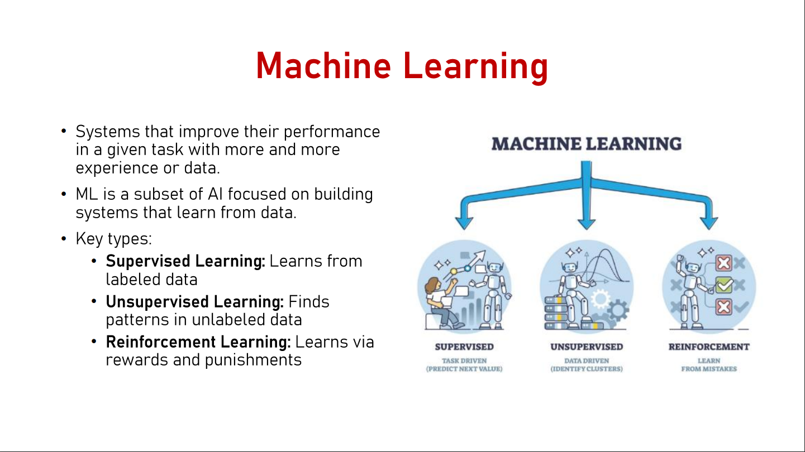
- Supervised Learning: learns from labeled data — task-driven, predicts the next value (e.g. email spam detection, house price prediction).
- Unsupervised Learning: finds patterns in unlabeled data — data-driven, identifies clusters (e.g. customer segmentation, anomaly detection).
- Reinforcement Learning: learns via rewards and punishments — learns from mistakes (e.g. AlphaGo, self-driving cars).
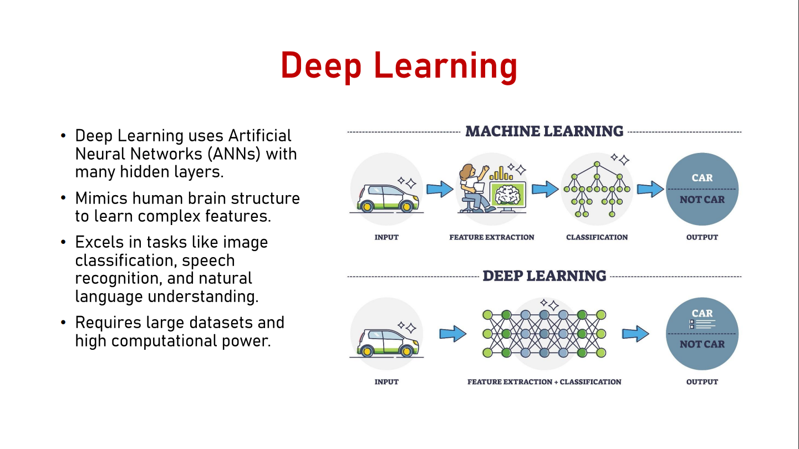
Deep Learning uses Artificial Neural Networks (ANNs) with many hidden layers, mimicking the human brain's structure to learn complex features automatically.
Deep Learning pipeline: Input → Feature Extraction + Classification done automatically by the network → Output.
DL excels at image classification, speech recognition, and natural language understanding — but requires large datasets and high computational power (GPUs, and training can take days/weeks).
AI in a Nutshell — Real-World Implementations
Putting it all together: real systems almost always combine several AI areas at once.
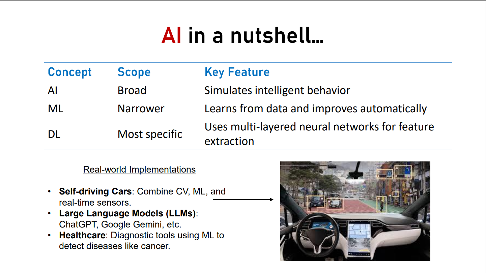
Internet of Things (IoT)
IoT is a network of physical objects embedded with sensors, software, and other technologies that connect and exchange data over the internet or other communication networks.
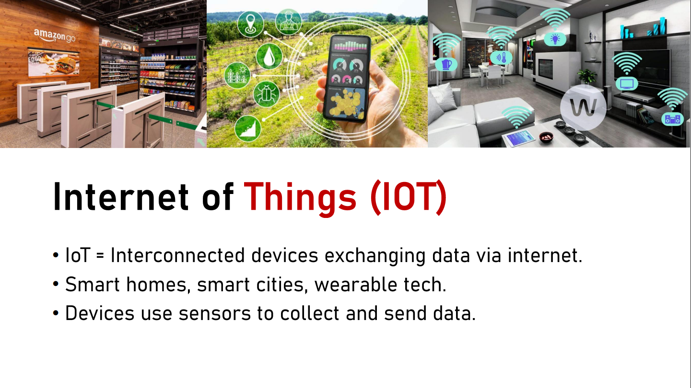
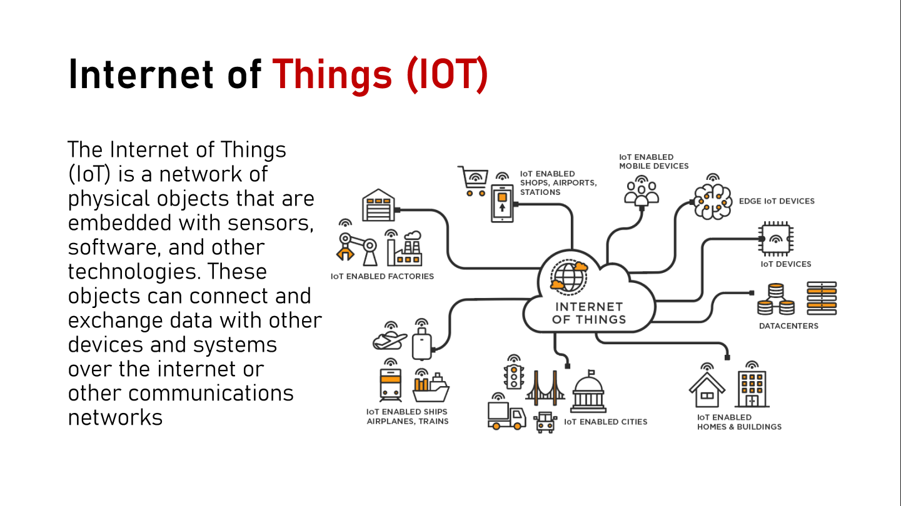
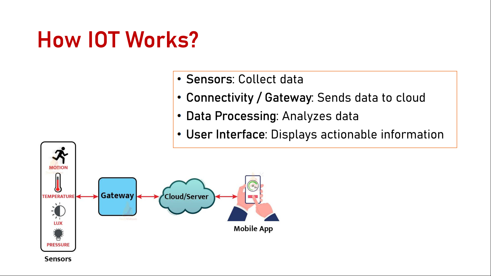
| Stage | What it does |
|---|---|
| Sensors | Collect data (motion, temperature, lux, pressure, etc.) |
| Connectivity / Gateway | Sends data to the cloud (WiFi, Bluetooth, cellular) |
| Data Processing | Analyzes the data for patterns and insights |
| User Interface | Displays actionable information (e.g. mobile app) |
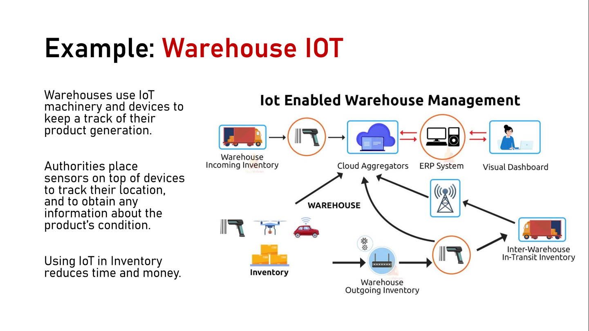
Warehouses use IoT machinery and sensors to track product generation and location. Sensors on incoming/outgoing inventory feed a cloud aggregator, which connects to an ERP system and a visual dashboard for staff. Benefits: reduces time and money, and improves inventory accuracy.
Quantum Computing
Quantum computing uses the principles of quantum physics. Unlike classical bits (0 or 1), quantum bits — qubits — can be both at once.
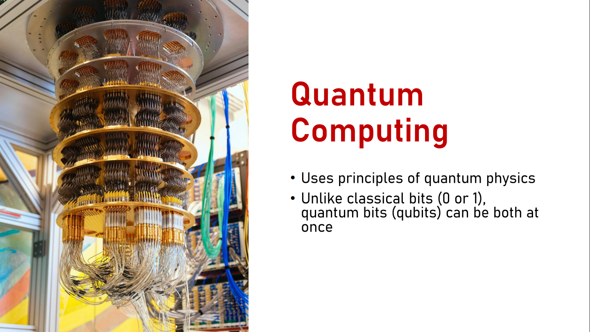
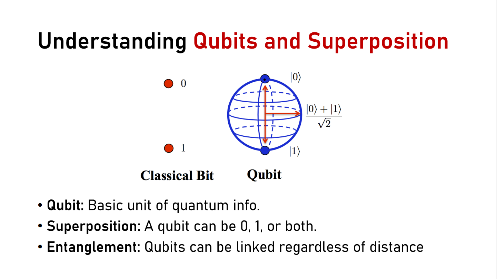
- Superposition: a qubit can be 0, 1, or both simultaneously — like a coin still spinning in the air.
- Entanglement: qubits can be linked regardless of distance — changing one instantly affects the other.
- Quantum Interference: amplifies correct answers and cancels out wrong ones, improving accuracy.
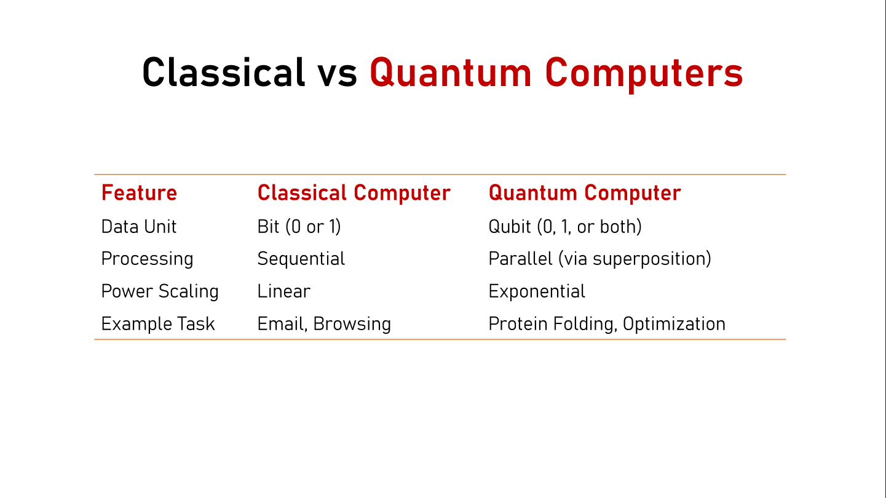
| Feature | Classical Computer | Quantum Computer |
|---|---|---|
| Data Unit | Bit (0 or 1) | Qubit (0, 1, or both) |
| Processing | Sequential | Parallel (via superposition) |
| Power Scaling | Linear | Exponential |
| Example Task | Email, browsing | Protein folding, optimization |
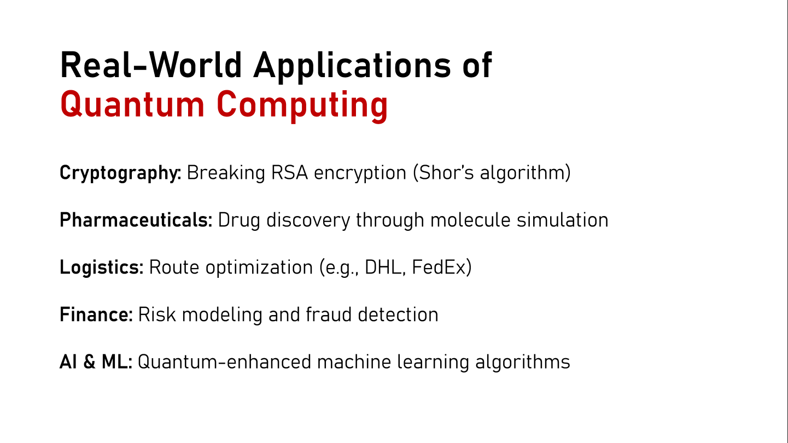
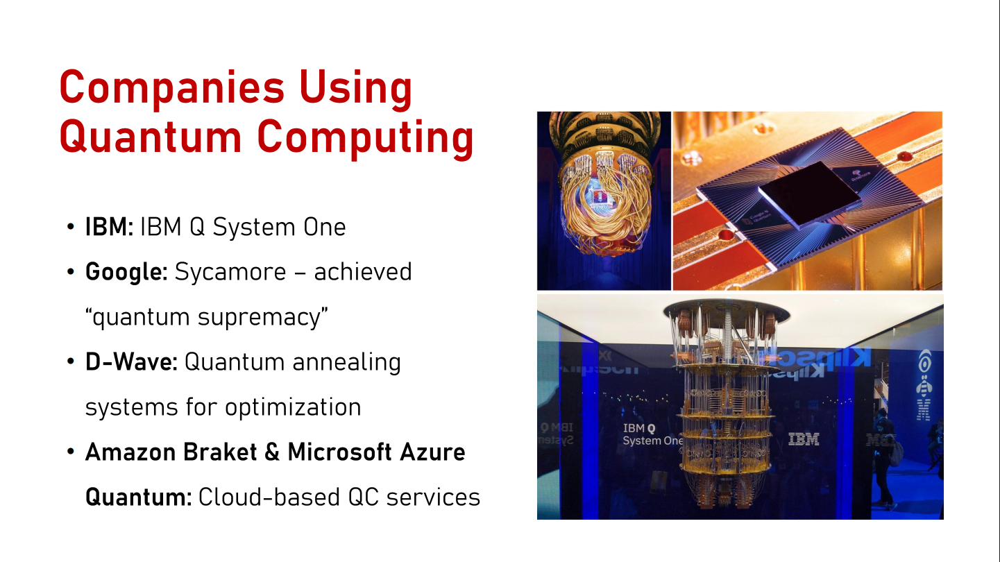
| Company | Product / Focus |
|---|---|
| IBM | IBM Q System One |
| Sycamore — achieved "quantum supremacy" (2019) | |
| D-Wave | Quantum annealing systems for optimization |
| Amazon / Microsoft | Amazon Braket & Microsoft Azure Quantum — cloud-based QC services |
What to Remember for the Exam
The exact facts this topic loves to test — memorize these cold.
- John McCarthy coined "Artificial Intelligence" at the Dartmouth Conference, 1956.
- AI went through two "winters" — after the 1st wave (rule-based/symbolic AI) and after the Expert Systems boom — both caused by funding cuts and scaling problems.
- Expert systems = User Interface → Inference Engine → Knowledge Base, built to preserve scarce/expensive human expertise.
- NLP splits into NLU (understanding language) and NLG (generating language) — know which is which.
- AI ⊃ ML ⊃ DL — AI is broadest, ML learns from data, DL uses multi-layer neural networks and needs the most data/compute.
- 3 ML types — Supervised (labeled data), Unsupervised (finds patterns), Reinforcement (rewards/punishments).
- IoT's 4 stages, in order: Sensors → Connectivity/Gateway → Data Processing → User Interface.
- A qubit can be 0, 1, or both at once (superposition) — this is what gives quantum computers exponential rather than linear power scaling.
- Quantum supremacy = a quantum computer solving something a classical computer practically cannot (Google's Sycamore, 2019).
- Know the 3 quantum properties — Superposition, Entanglement, Interference ("SEI") — and one application area each (cryptography, pharma, logistics, finance, AI/ML).
Glossary — Acronyms & Meanings
| Acronym | Full term | Meaning |
|---|---|---|
| AI | Artificial Intelligence | Capability of machines to imitate intelligent human behavior — learning, reasoning, problem-solving, self-correction. |
| ML | Machine Learning | Subset of AI where systems learn from data and improve performance without being explicitly reprogrammed. |
| DL | Deep Learning | Subset of ML using multi-layer artificial neural networks to automatically learn complex features. |
| NLP | Natural Language Processing | Field enabling computers to work with human (natural) language rather than computer language. |
| NLU | Natural Language Understanding | NLP branch focused on machines comprehending and interpreting human language. |
| NLG | Natural Language Generation | NLP branch focused on machines producing coherent, human-like language. |
| CV | Computer Vision | Field enabling computers to interpret and extract information from images and video. |
| ANN | Artificial Neural Network | A network of connected nodes loosely modeled on the brain, used in Deep Learning. |
| GPU | Graphics Processing Unit | Powerful parallel processor that makes training large Deep Learning models practical. |
| IoT | Internet of Things | Network of physical objects with sensors and software that connect and exchange data online. |
| ERP | Enterprise Resource Planning | Business software system (e.g. used in the Warehouse IoT example) that connects operational data across an organization. |
| QC | Quantum Computing | Computing that uses quantum-physics properties (qubits, superposition, entanglement) instead of classical bits. |
| — | Qubit | Basic unit of quantum information — unlike a classical bit, it can represent 0, 1, or both at once. |
| LLM | Large Language Model | Massive neural network trained on text data to hold conversations, generate text, translate, and more (e.g. ChatGPT). |
Comparison Tables
| Concept | Scope | Key Feature | Data Need | Hardware |
|---|---|---|---|---|
| AI | Broadest | Simulates intelligent behavior | Varies | Standard computers |
| ML | Subset of AI | Learns from data and improves automatically | Moderate–large | Standard to powerful |
| DL | Subset of ML | Multi-layer neural networks, automatic feature learning | Very large | Requires GPUs/TPUs |
| Feature | Supervised | Unsupervised | Reinforcement |
|---|---|---|---|
| Data | Labeled | Unlabeled | No fixed dataset — an environment |
| Goal | Predict the next value | Identify clusters / patterns | Learn optimal behavior via rewards |
| Driven by | Task | Data | Trial and error |
| Example | Spam detection, price prediction | Customer segmentation, anomaly detection | AlphaGo, self-driving cars |
| Feature | Classical Computer | Quantum Computer |
|---|---|---|
| Data Unit | Bit (0 or 1) | Qubit (0, 1, or both) |
| Processing | Sequential | Parallel (via superposition) |
| Power Scaling | Linear | Exponential |
| Maturity | Mature, reliable | Emerging, experimental |
| Example Task | Email, browsing, documents | Protein folding, optimization |
🇱🇰 Sinhala Vocabulary — පාඩමෙහි දුෂ්කර වචන
This lesson's difficult English words — with Sinhala meanings and example sentences from daily life, AI/tech, and general fields.
A conclusion reached by reasoning from evidence, rather than being told directly.
සාක්ෂි මත පදනම්ව තර්කනයෙන් ලබාගන්නා නිගමනයක්
- DailyFrom her tired voice, I made an inference that she hadn't slept well.
- AIThe expert system's inference engine reasons over the knowledge base to give advice.
- SoftwareOnce a model is trained, running it on new data is called inference, not training.
- HardwareSome chips are built specifically to speed up inference rather than training.
- CyberAnalysts drew an inference about the attacker's location from the log timestamps.
The state of existing in two or more conditions at the same time, before being observed or measured.
නිරීක්ෂණය කිරීමට පෙර එකවර තත්ත්ව දෙකකින් හෝ වැඩිගණනකින් පැවතීම
- DailyIt felt like the plan was in superposition — both happening and not happening until confirmed.
- AI/QCA qubit in superposition can represent 0 and 1 at the same time.
- HardwareSuperposition is what lets a quantum processor explore many possibilities in parallel.
- SoftwareQuantum algorithms are designed to take advantage of superposition for speed.
- CyberFuture encryption may need to resist attacks that exploit superposition-based quantum computers.
Able to grow or handle a much larger workload without breaking down or needing a complete redesign.
විශාල වශයෙන් වර්ධනය කිරීමට හෝ වැඩි බරක් දරාගැනීමට හැකි
- DailyWe chose a plan that's scalable so we don't have to redo everything later.
- AIExpert systems built on hard-coded rules turned out not to be very scalable.
- HardwareCloud GPUs make Deep Learning training more scalable than a single desktop machine.
- SoftwareThe recommendation engine needed a more scalable architecture as the user base grew.
- CyberA scalable logging system is essential once you're monitoring thousands of devices.
Able to act and make decisions independently, without needing constant human control.
නිරන්තර මිනිස් පාලනයකින් තොරව ස්වාධීනව ක්රියා කිරීමට හැකි
- DailyThe vacuum robot is fully autonomous — it cleans without anyone guiding it.
- AIAn autonomous vehicle uses Computer Vision, ML, and sensors together to drive itself.
- HardwareDrones can fly autonomous delivery routes using GPS and onboard sensors.
- SoftwareThe agent was trained with reinforcement learning to behave autonomously in the game.
- CyberAutonomous security systems can respond to threats faster than a human analyst.
To imitate or reproduce the behavior of a real system, process, or situation, often using a model.
සැබෑ පද්ධතියක හෝ තත්ත්වයක හැසිරීම අනුකරණය කිරීම
- DailyWe ran a mock interview to simulate the real exam conditions.
- AIAI's goal is to simulate intelligent human behavior in machines.
- HardwareQuantum computers can simulate molecules for drug discovery far faster than classical ones.
- SoftwareDeep Learning networks are designed to simulate how the human brain processes information.
- CyberSecurity teams simulate phishing attacks to test employee awareness.
📝 MCQ Practice Test — 80 Questions
The module's final assessment is a Multiple Choice online class test (1 hour, 50% weighting) — so practice in that exact format. 80 hard, exam-style MCQs covering every section of this lesson equally (10 per section). Click an option to check it; only one attempt is scored per question.